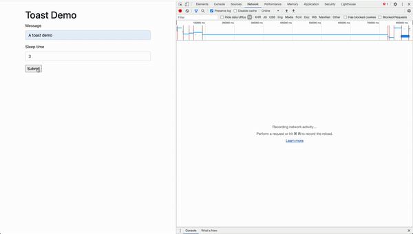

This was my first attempt to build something using ASGI and Django. I compiled some of my asgi utils into a repo dj-asgi-utils. It is not on pypi at the moment. If you want to skip to using the code, follow the toasts section of the readme. Hopefully it's easy to get up and running with real time toasts.
Note None of this code has been run in a production environment.

The implementation
There are 3 parts:
- A backend SSE stream of toasts.
- A backend endpoint to acknowledge toasts.
- A way to serve toast javascript and css in html responses.
- A way to programmatically create toasts.
A backend stream of toasts
Classes from dj_asgi_utils.core are used to build our
SSE event stream, including AsyncStreamingHttpResponse, ASGIHandler, and sse.
import asyncio
from dj_asgi_utils.core import sse
from dj_asgi_utils.core.responses import AysncStreamingHttpResponse
async def toast_stream(user_id):
while True:
toasts = await async_toasts(user_id)
serializer = ToastSerializer(toasts, many=True)
yield sse(serializer.data, event="toast")
await asyncio.sleep(10)
async def toast_stream_view(request):
stream = toast_stream(1)
response = AysncStreamingHttpResponse(
streaming_content=stream, content_type="text/event-stream"
)
response["Cache-Control"] = "no-cache"
return response
Can you use the ORM?
Yes you can with the sync_to_async wrapper. The example from the documentation seems rather straight forward.
@sync_to_async
def get_blog(pk):
return Blog.objects.select_related('author').get(pk=pk)
When I originally wrote the async_toasts function, the code looked roughly like:
@sync_to_async
def async_toasts(user_id):
return Toast.objects.filter(read=False, user_id=user_id).all()
async def some_async_view(user_id):
toasts = await async_toasts(user_id)
...
If you called that view, you'd be greeted with a friendly SynchronousOnlyOperation exception. This exception is super helpful. It prevents
us from shooting ourselves in the foot. If you're an experienced Django developer you probably rely heavily on lazy querysets. When working with
the sync_to_async decorator, you need to evaluate your queryset before the coroutine returns. The example in the docs
works because get is not lazy, it returns results immediately. The end goal is to allow the ORM itself to be async
building upon an async driver but the support is not there yet.
Exception inside application: You cannot call this from an async context - use a thread or sync_to_async.
Traceback (most recent call last):
File "/lib/python3.7/site-packages/daphne/cli.py", line 30, in asgi
await self.app(scope, receive, send)
File "/lib/python3.7/site-packages/django/contrib/staticfiles/handlers.py", line 96, in __call__
return await self.application(scope, receive, send)
File "/dj_asgi_utils/core/handlers.py", line 48, in __call__
(self.listen_for_disconnect, {"receive": receive}),
File "/dj_asgi_utils/core/concurrency.py", line 9, in run_until_first_complete
[task.result() for task in done]
File "/dj_asgi_utils/core/concurrency.py", line 9, in <listcomp>
[task.result() for task in done]
File "/dj_asgi_utils/core/handlers.py", line 102, in send_response
async for part in response:
File "/dj_asgi_utils/core/responses.py", line 11, in <genexpr>
self.make_bytes(chunk) async for chunk in streaming_content
File "/dj_asgi_utils/toasts/streams.py", line 12, in toast_stream
yield sse(serializer.data, event="toast")
File "/lib/python3.7/site-packages/rest_framework/serializers.py", line 760, in data
ret = super().data
File "/lib/python3.7/site-packages/rest_framework/serializers.py", line 260, in data
self._data = self.to_representation(self.instance)
File "/lib/python3.7/site-packages/rest_framework/serializers.py", line 678, in to_representation
self.child.to_representation(item) for item in iterable
File "/lib/python3.7/site-packages/django/db/models/query.py", line 287, in __iter__
self._fetch_all()
File "/lib/python3.7/site-packages/django/db/models/query.py", line 1303, in _fetch_all
self._result_cache = list(self._iterable_class(self))
File "/lib/python3.7/site-packages/django/db/models/query.py", line 53, in __iter__
results = compiler.execute_sql(chunked_fetch=self.chunked_fetch, chunk_size=self.chunk_size)
File "/lib/python3.7/site-packages/django/db/models/sql/compiler.py", line 1152, in execute_sql
cursor = self.connection.cursor()
File "/lib/python3.7/site-packages/django/utils/asyncio.py", line 24, in inner
raise SynchronousOnlyOperation(message)
django.core.exceptions.SynchronousOnlyOperation: You cannot call this from an async context - use a thread or sync_to_async.
A backend endpoint to acknowledge toasts
APIs are way more fun to build with drf. We need a way for the user to acknolwedge the toast such that they dissapear
from the stream. A /toast/:id/read/ action endpoint with permissions only for the owner will do.
class ToastViewSet(GenericViewSet):
queryset = Toast.objects.all()
serializer_class = ToastSerializer
permission_classes = [
IsOwner,
]
@action(detail=True, methods=["post"])
def read(self, request, pk):
toast = self.get_object()
toast.read = True
toast.save()
serializer = self.get_serializer(toast)
return Response(serializer.data)
A way to serve toast javascript and css
The easiest way is a middleware that
injects the necessary javascript and css onto html responses, similar to django-debug-toolbar. Do not be like me;
read the docs about
asynchronous middleware. Removing all of the toast specific business logic, I started with a middleware
(installed in my MIDDLEWARE setting) and view.
def simple_middleware(get_response):
def middleware(request):
return get_response(request)
return middleware
MIDDLEWARE = [
...,
'path.to.simple_middleware',
]
async def toast_demo(request):
form = ToastForm(request.POST or None)
if request.method == "POST" and form.is_valid():
async def sleep_task(user_id):
message = f"Sleep running for at least {form.cleaned_data['sleep_time']} second(s)..."
await async_create_toast(message, user_id)
await asyncio.sleep(form.cleaned_data["sleep_time"])
await async_create_toast(form.cleaned_data["message"], user_id)
user_id = await get_user_id(request)
loop = asyncio.get_event_loop()
loop.create_task(sleep_task(user_id))
return redirect("toast-demo")
context = {"form": form}
return render(request, "example/toast_demo.html", context=context)
The above code will hang forever, here, when awaiting from the first async_create_toast function.
> /usr/local/Cellar/python/3.7.5/Frameworks/Python.framework/Versions/3.7/lib/python3.7/threading.py(970)_bootstrap_inner()
969 with _active_limbo_lock:
--> 970 try:
971 # We don't call self._delete() because it also
While I don't understand exactly why the above is hanging, the async middleware docs provide the necessary decorators in order to create async middleware. In the case of async only, the middleware can be:
@async_only_middleware
def simple_middleware(get_response):
async def middleware(request):
return await get_response(request)
return middleware
Creating toasts
Toasts are created programmatically in either async or sync code. If you were in a pure async view, you'd use the async function.
If you were testing using ./manage.py shell to create some toasts, you'd use the sync function. Once toasts
are created, they would be available over the stream if the user is connected, until they are acknowledged.
@sync_to_async
def async_create_toast(message, user_id):
obj = Toast.objects.create(message=message, user_id=user_id)
return obj
def create_toast(message, user_id):
obj = Toast.objects.create(message=message, user_id=user_id)
return obj
While some edges might still be rough around ASGI, it seems like a great foundation has been set up to both protect us and build upon. Have you started building anything with ASGI?